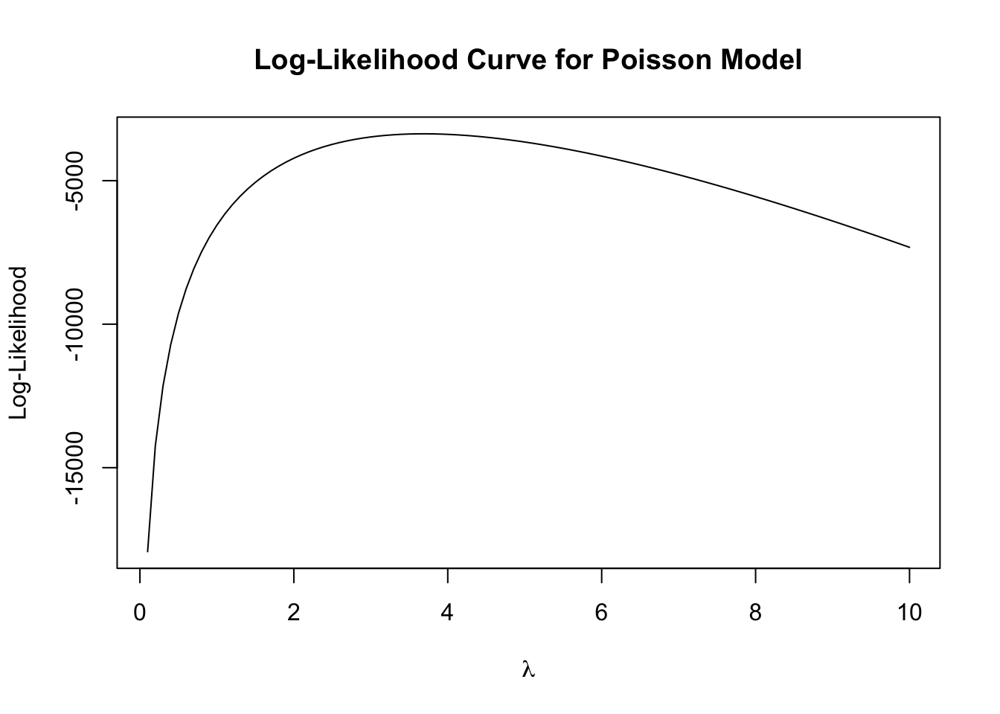

library(ggplot2)
library(dplyr)
library(knitr)
library(tidyr)Poisson Regression Examples
Blueprinty Case Study
Introduction
Blueprinty is a small firm that makes software for developing blueprints specifically for submitting patent applications to the US patent office. Their marketing team would like to make the claim that patent applicants using Blueprinty’s software are more successful in getting their patent applications approved. Ideal data to study such an effect might include the success rate of patent applications before using Blueprinty’s software and after using it. Unfortunately, such data is not available.
However, Blueprinty has collected data on 1,500 mature (non-startup) engineering firms. The data include each firm’s number of patents awarded over the last 5 years, regional location, age since incorporation, and whether or not the firm uses Blueprinty’s software. The marketing team would like to use this data to make the claim that firms using Blueprinty’s software are more successful in getting their patent applications approved.
Data
blueprinty <- read.csv("blueprinty.csv")
head(blueprinty) patents region age iscustomer
1 0 Midwest 32.5 0
2 3 Southwest 37.5 0
3 4 Northwest 27.0 1
4 3 Northeast 24.5 0
5 3 Southwest 37.0 0
6 6 Northeast 29.5 1airbnb <- read.csv("airbnb.csv")
head(airbnb) X id days last_scraped host_since room_type bathrooms bedrooms price
1 1 2515 3130 4/2/2017 9/6/2008 Private room 1 1 59
2 2 2595 3127 4/2/2017 9/9/2008 Entire home/apt 1 0 230
3 3 3647 3050 4/2/2017 11/25/2008 Private room 1 1 150
4 4 3831 3038 4/2/2017 12/7/2008 Entire home/apt 1 1 89
5 5 4611 3012 4/2/2017 1/2/2009 Private room NA 1 39
6 6 5099 2981 4/2/2017 2/2/2009 Entire home/apt 1 1 212
number_of_reviews review_scores_cleanliness review_scores_location
1 150 9 9
2 20 9 10
3 0 NA NA
4 116 9 9
5 93 9 8
6 60 9 9
review_scores_value instant_bookable
1 9 f
2 9 f
3 NA f
4 9 f
5 9 t
6 9 f# compare mean
blueprinty %>%
group_by(iscustomer) %>%
summarize(
mean_patents = mean(patents),
sd_patents = sd(patents),
count = n()
) %>%
kable(caption = "Table 1. Average Number of Patents by Customer Status")| iscustomer | mean_patents | sd_patents | count |
|---|---|---|---|
| 0 | 3.473013 | 2.225060 | 1019 |
| 1 | 4.133056 | 2.546846 | 481 |
# Compare Histogram
ggplot(blueprinty, aes(x = patents, fill = as.factor(iscustomer))) +
geom_histogram(position = "identity", alpha = 0.5, bins = 30)+
labs(title = "Patent Counts by Customer Status",
x = "Number of Patents",
fill = "Customer (1=Yes, 0=No)")+
theme_minimal()Explanation: Blueprinty customers have a higher average number of patents(4.133) compare to non-customer(3.473) and from the histogram distribution, we can clearly observer that the Blueprinty customer tend to be more represented in the higher end of patent counts.
Blueprinty customers are not selected at random. It may be important to account for systematic differences in the age and regional location of customers vs non-customers.
blueprinty %>%
group_by(iscustomer) %>%
summarize(
mean_age = round(mean(age), 1),
sd_age = round(sd(age), 2),
count = n()
) %>%
kable(caption = "Table 2. Average Age by Customer Status")| iscustomer | mean_age | sd_age | count |
|---|---|---|---|
| 0 | 26.1 | 6.95 | 1019 |
| 1 | 26.9 | 7.81 | 481 |
blueprinty %>%
group_by(iscustomer, region) %>%
summarize(count = n(), .groups = "drop") %>%
pivot_wider(names_from = iscustomer, values_from = count, values_fill = 0) %>%
kable(caption = "Table 3. Customer Distribution by Region (0 = Non-Customer, 1 = Customer)")| region | 0 | 1 |
|---|---|---|
| Midwest | 187 | 37 |
| Northeast | 273 | 328 |
| Northwest | 158 | 29 |
| South | 156 | 35 |
| Southwest | 245 | 52 |
Explanation: From the age comparison, we can observe that blueprinty customer has a higher average age which is 26.90021 compare with non-customer (26.10157). From the region comparison, we can observe that more blueprinty customer live in the Northeast and areas like Midwest, Northwest, South and Southwest have fever customers live in.
Estimation of Simple Poisson Model
Since our outcome variable of interest can only be small integer values per a set unit of time, we can use a Poisson density to model the number of patents awarded to each engineering firm over the last 5 years. We start by estimating a simple Poisson model via Maximum Likelihood.
The probability mass function for a Poisson random variable is:
\[ f(Y_i \mid \lambda_i) = \frac{e^{-\lambda_i} \lambda_i^{Y_i}}{Y_i!} \]
Assuming independence across observations, the likelihood function for the sample is:
\[ L(\boldsymbol{\lambda}) = \prod_{i=1}^n \frac{e^{-\lambda_i} \lambda_i^{Y_i}}{Y_i!} \]
And the log-likelihood is:
\[ \log L(\boldsymbol{\lambda}) = \sum_{i=1}^n \left( -\lambda_i + Y_i \log(\lambda_i) - \log(Y_i!) \right) \]
poisson_loglikelihood <- function(lambda, Y) {
ll <- sum(-lambda + Y * log(lambda) - lgamma(Y + 1))
return(ll)
}
The log-likelihood curve shows how the fit of the Poisson model varies with different values of lambda. The curve reaches a clear peak around λ = 3.8, indicating that this value maximizes the likelihood of observing the data. This is consistent with the idea that the maximum likelihood estimate (MLE) of lambda is the value that best explains the observed patent counts.
lambda_mle <- mean(blueprinty$patents)
lambda_mle[1] 3.684667Taking the derivative of the log-likelihood and solving for λ gives us the result λ̂ = Ȳ. This makes intuitive sense because the Poisson distribution is parameterized by its mean. In our data, the average number of patents per firm is 3.685.
neg_loglikelihood <- function(lambda) {
-poisson_loglikelihood(lambda, blueprinty$patents)
}
mle_result <- optim(par = 2, fn = neg_loglikelihood, method = "Brent", lower = 0.01, upper = 10)
mle_result$par # the best lambda [1] 3.684667-mle_result$value # the largest lambda[1] -3367.684Using the ‘optim()’, we numerically maximized the log-likelihood function and found that the MLE of λ is nearly 3.685. The value of the maximized log-likehood is approximately -3367. This high log-likelihood values indicates a better fitting model and can used for comparing models. ### Estimation of Poisson Regression Model
Next, we extend our simple Poisson model to a Poisson Regression Model such that \(Y_i = \text{Poisson}(\lambda_i)\) where \(\lambda_i = \exp(X_i'\beta)\). The interpretation is that the success rate of patent awards is not constant across all firms (\(\lambda\)) but rather is a function of firm characteristics \(X_i\). Specifically, we will use the covariates age, age squared, region, and whether the firm is a customer of Blueprinty.
poisson_regression_loglikelihood <- function(beta, Y, X) {
lambda <- exp(X %*% beta)
ll <- sum(-lambda + Y * log(lambda) - lgamma(Y + 1))
return(ll)
} Coefficient Std_Error
(Intercept) -0.125735915 0.1122180354
age 0.115793715 0.0063574230
age_sq -0.002228748 0.0000771291
regionNortheast -0.024556782 0.0433762879
regionNorthwest -0.034827790 0.0529311002
regionSouth -0.005441860 0.0524007440
regionSouthwest -0.037784109 0.0471722463
iscustomer 0.060665584 0.0320588299From the output above, we can observe that age plays a positive and significant effect on patent output, but the negative coefficient on age squared suggests diminishing return age. Regional effects are small and mostly insignificant compared to the baseline Midwest. Plus, being as a blueprinty customer is associated with a 6.3% increase in the expected number of patents.
glm_model <- glm(patents ~ age + I(age^2) + region + iscustomer,
data = blueprinty,
family = poisson())
summary(glm_model)
Call:
glm(formula = patents ~ age + I(age^2) + region + iscustomer,
family = poisson(), data = blueprinty)
Coefficients:
Estimate Std. Error z value Pr(>|z|)
(Intercept) -0.508920 0.183179 -2.778 0.00546 **
age 0.148619 0.013869 10.716 < 2e-16 ***
I(age^2) -0.002971 0.000258 -11.513 < 2e-16 ***
regionNortheast 0.029170 0.043625 0.669 0.50372
regionNorthwest -0.017574 0.053781 -0.327 0.74383
regionSouth 0.056561 0.052662 1.074 0.28281
regionSouthwest 0.050576 0.047198 1.072 0.28391
iscustomer 0.207591 0.030895 6.719 1.83e-11 ***
---
Signif. codes: 0 '***' 0.001 '**' 0.01 '*' 0.05 '.' 0.1 ' ' 1
(Dispersion parameter for poisson family taken to be 1)
Null deviance: 2362.5 on 1499 degrees of freedom
Residual deviance: 2143.3 on 1492 degrees of freedom
AIC: 6532.1
Number of Fisher Scoring iterations: 5We checked our results using R’s glm() function, which estimates the Poisson regression model with the same specification as our custom MLE implementation. The model includes a constant, firm age, age squared, region dummies (Midwest as the reference category), and a binary indicator for whether the firm is a Blueprinty customer.
The results from glm() are generally consistent with those obtained via optim(). While there are some differences in the magnitude of the coefficients—especially for the intercept and the customer indicator—this is likely due to slight differences in how the design matrix is constructed and how categorical variables are handled internally by glm(). Importantly, the direction and significance of the main variables remain consistent.
The coefficient on age is positive and significant, suggesting that older firms tend to have more patents. However, the negative and significant coefficient on age squared indicates diminishing returns to age: patent output increases with age up to a point, but the effect eventually tapers off.
The coefficient on the customer indicator is positive (0.208) and statistically significant (p < 0.001), implying that, on average, Blueprinty customers have higher patent counts than non-customers. Exponentiation the coefficient gives:
[ (0.208) ]
This means that, all else equal, Blueprinty customers are expected to have approximately 23.1% more patents than comparable non-customers.
Regional effects are small and not statistically significant, suggesting limited explanatory power after controlling for firm characteristics.
Overall, the glm() results confirm our earlier findings and validate the implementation of the custom MLE function.
X_0 <- blueprinty
X_1 <- blueprinty
X_0$iscustomer <- 0
X_1$iscustomer <- 1
y_pred_0 <- predict(glm_model, newdata = X_0, type = "response")
y_pred_1 <- predict(glm_model, newdata = X_1, type = "response")
delta <- y_pred_1 - y_pred_0
mean(delta)[1] 0.7927681To better interpret the effect of Blueprinty’s software, we created two counterfactual datasets: one where no firm is treated (iscustomer = 0) and one where all firms are treated (iscustomer = 1). We used the fitted glm() model to predict the number of patents under each scenario. On average, firms are predicted to have approximately 0.793 if they are Blueprinty customers compared to if they are not. This suggests that the Blueprinty software has a meaningful and positive effect on patent output.
AirBnB Case Study
Introduction
AirBnB is a popular platform for booking short-term rentals. In March 2017, students Annika Awad, Evan Lebo, and Anna Linden scraped of 40,000 Airbnb listings from New York City. The data include the following variables:
# check for missing values
colSums(is.na(airbnb)) X id days
0 0 0
last_scraped host_since room_type
0 35 0
bathrooms bedrooms price
160 76 0
number_of_reviews review_scores_cleanliness review_scores_location
0 10195 10254
review_scores_value instant_bookable
10256 0 df_model <- airbnb %>%
filter(!is.na(number_of_reviews),
!is.na(price),
!is.na(room_type),
!is.na(review_scores_cleanliness),
!is.na(review_scores_location),
!is.na(review_scores_value),
!is.na(instant_bookable))We began by examining the extent of missing data in the key variables. Three review score variables—review_scores_cleanliness, review_scores_location, and review_scores_value—each have over 10,000 missing entries, accounting for approximately 25% of the full dataset. Since these variables are essential for our regression model, we restrict the analysis to complete cases across all relevant fields.
The distribution of number_of_reviews is highly right-skewed. A large majority of listings have relatively few reviews, with the mode centered near zero.
df_model %>%
group_by(room_type) %>%
summarize(mean_reviews = mean(number_of_reviews), .groups = "drop")# A tibble: 3 × 2
room_type mean_reviews
<chr> <dbl>
1 Entire home/apt 21.4
2 Private room 21.4
3 Shared room 17.1We compare the average number of reviews across listing types. Both entire apartments and private rooms receive, on average, around 21 reviews per listing, while shared rooms receive noticeably fewer, averaging just over 17. This suggests that listings offering greater privacy may be more attractive to potential guests, potentially leading to a higher volume of bookings and therefore more reviews.
Call:
glm(formula = number_of_reviews ~ price + room_type + review_scores_cleanliness +
review_scores_location + review_scores_value + instant_bookable,
family = poisson(), data = df_model)
Coefficients:
Estimate Std. Error z value Pr(>|z|)
(Intercept) 3.568e+00 1.529e-02 233.370 <2e-16 ***
price -7.422e-06 7.573e-06 -0.980 0.327
room_typePrivate room -2.524e-02 2.683e-03 -9.406 <2e-16 ***
room_typeShared room -2.648e-01 8.562e-03 -30.926 <2e-16 ***
review_scores_cleanliness 1.130e-01 1.484e-03 76.151 <2e-16 ***
review_scores_location -8.213e-02 1.586e-03 -51.797 <2e-16 ***
review_scores_value -9.003e-02 1.788e-03 -50.354 <2e-16 ***
instant_bookablet 3.324e-01 2.877e-03 115.542 <2e-16 ***
---
Signif. codes: 0 '***' 0.001 '**' 0.01 '*' 0.05 '.' 0.1 ' ' 1
(Dispersion parameter for poisson family taken to be 1)
Null deviance: 971266 on 30345 degrees of freedom
Residual deviance: 947830 on 30338 degrees of freedom
AIC: 1070159
Number of Fisher Scoring iterations: 6We estimate a Poisson regression model to understand how listing characteristics are associated with the number of reviews, which we use as a proxy for booking volume. The dependent variable is number_of_reviews, and predictors include price, room type, review scores, and instant bookability.
For the room type, private room received 2.5% fewer reviews while the share room received 23% fewer reviews, holding other variables constant.
For the review scores, as the cleanliness increased by one point, the reviews increased by 12%. However, As values and location increased by 1 unit, the reviews decreased 8-9%, holding other variables constant.
For the instant booking, the hotels that can instantly booked reviews received 39% more than hotels that need hotel approvals.
For price, this variable is statistically significant in the model.
These results highlight that convenience and perceived cleanliness matter more than price, and that shared accommodations may be less attractive to guests based on actual review behavior.